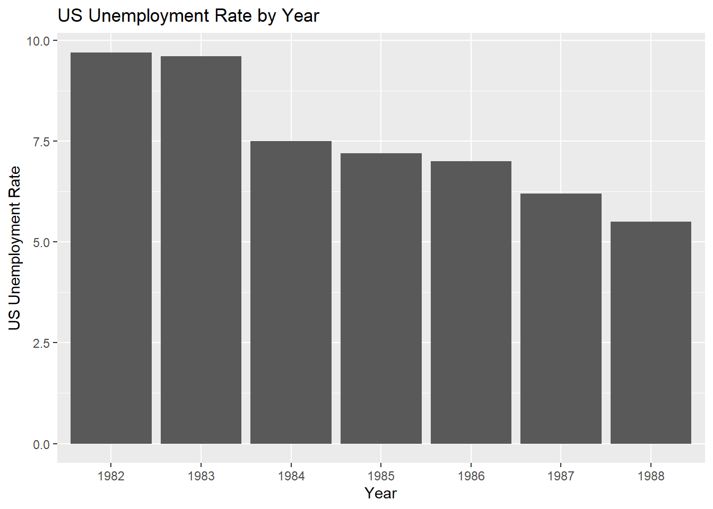
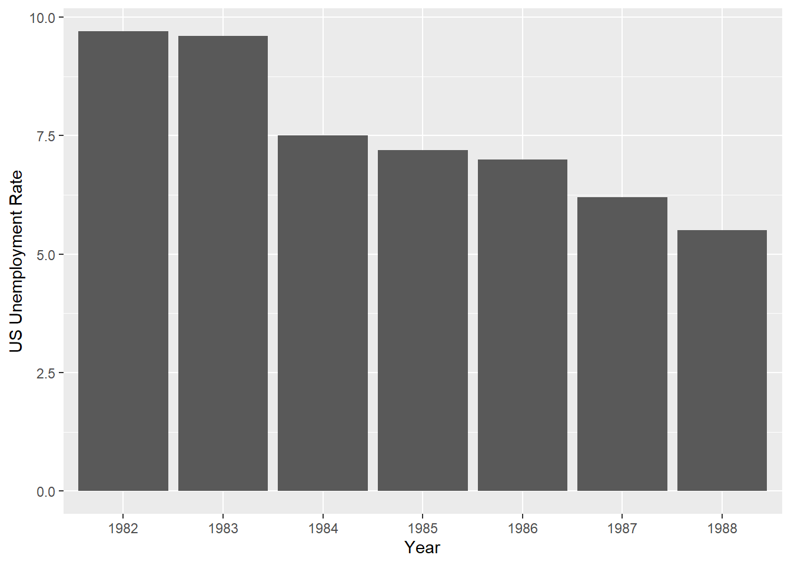
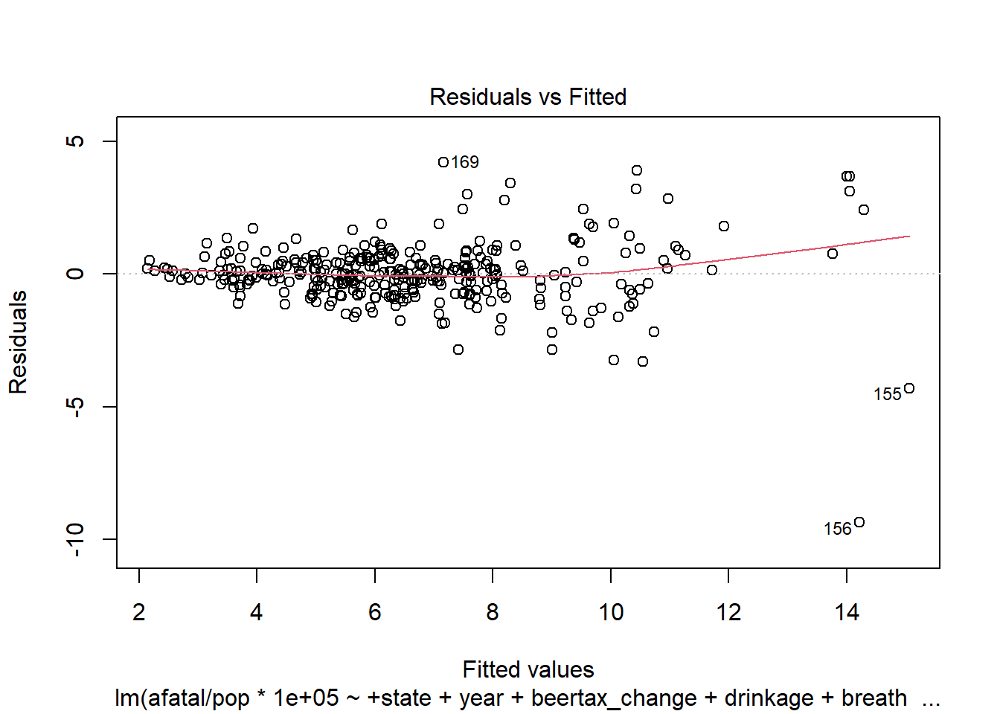
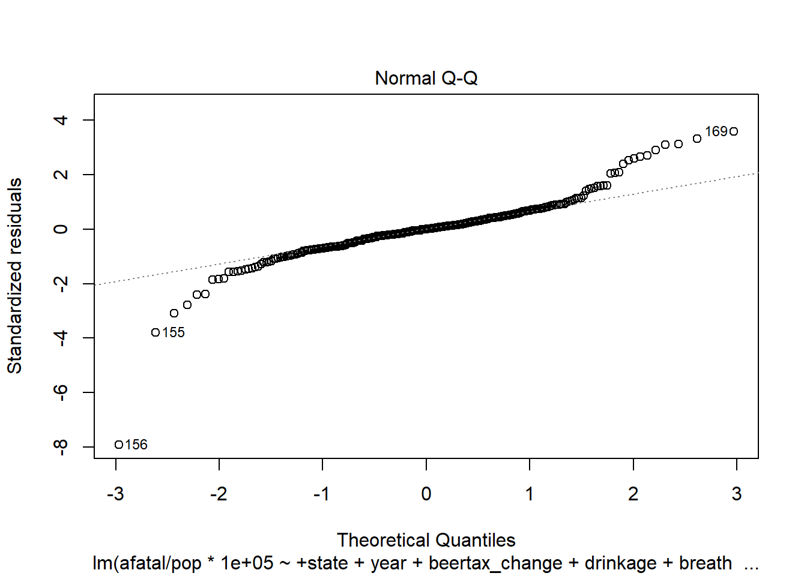
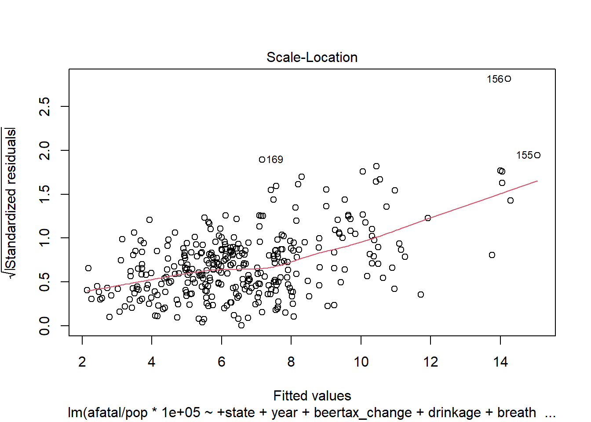
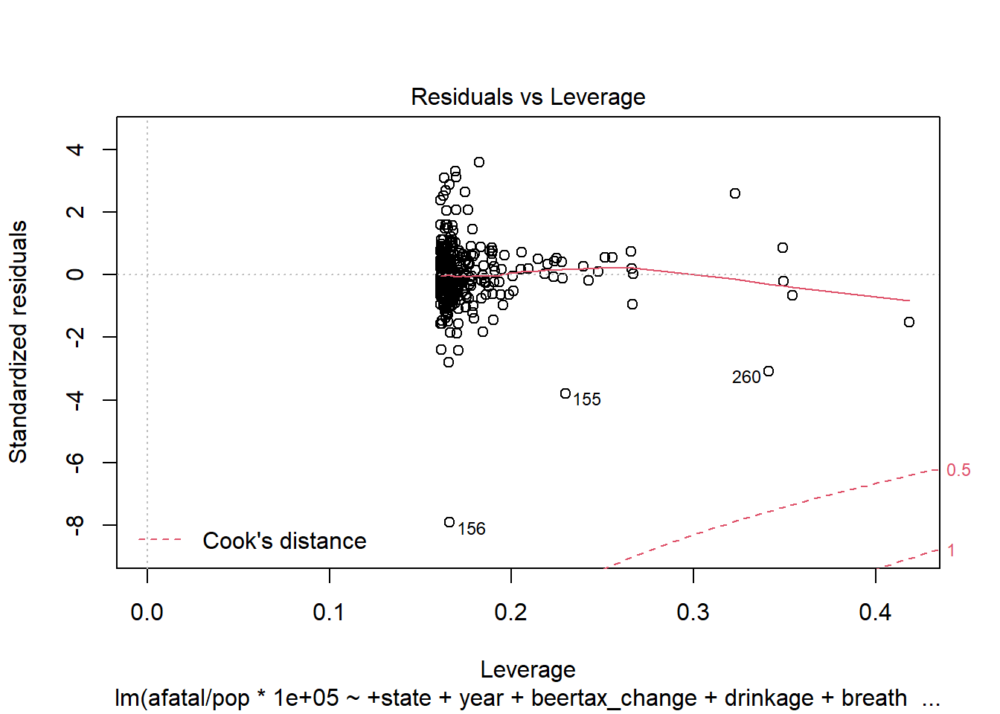

Traffic Fatalities
Blake, Charlie, Eshna, Noah
February 12, 2021
1 Abstract
2 Introduction
With improvements in safety technology and policy, the fatality rate per 100 million vehicle miles driven has decreased from 25 in 1921 to just 2 in 2015 (Holodny, 2015). Although these improvements had a significant effect on fatalities, recently that has not been the case. The engineering firm Sam Schwarz (2020) found a 12.7% increase in the fatalities per vehicle miles traveled from the first six months of 2019 to the first six months of 2020. Not only are improvements in public policy important to the preservation of human life, but motor vehicle crashes also significantly affect the economy. In 2010, the economic costs associated with motor vehicle crashes were estimated to be $242 billion (Blincoe et al., 2015). With an ever-changing transportation grid, it’s critical to find what new implementations of policy can reduce the amount of traffic fatalities.
3 Background
The the data set utlized in this study is from the US Department of Transportation Fatal Accident Reporting System. It is avaialbe through the R package “AER” which stands for applied econometrics with R. The data set contains information on automobile fatalities from each US state, excluding Hawaii and Alaska, from 1982 to 1988. There are a total of 336 observations, which include 7 annual observations for each of the 48 states. Percentages of each state’s Mormon and Baptist population are given. Economic figures such as income per capita, employment per population, and the US unemployment rate and the US employment per population ratio are also listed. The amount of spirits consumed as well as each state’s beer tax is given. Information on whether a state has a preliminary breath test law, mandatory jail sentence, and mandatory community service for a DUI. The number of vehicle fatalities for 15-17, 18-20, and 21-24 year old drivers is given, as well as their night time vehicle fatalities and total populations. The total number of alcohol involved vehicle fatalities is listed. Each state contains information on its total population. The average miles per driver is given. Each state’s legal drinking age and the percentage of residents in dry counties is listed.
A previous study by Wagenaar, Livingston, and Staras (2015) found that a beer tax increase in the state of Illinois decreased average monthly fatal alcohol-related crashes by 26 percent. This was done by examining the monthly crash data 104 months before the tax increase and 28 months after. Additionally, a meta-analysis by Wagenaar, Salois, and Komro (2009) found that public policies that raise prices of alcohol are an effective means to reduce drinking.
4 Descriptive Analysis
library(AER)## Loading required package: lmtest## Loading required package: zoo##
## Attaching package: 'zoo'## The following objects are masked from 'package:base':
##
## as.Date, as.Date.numeric## Loading required package: sandwich## Loading required package: survivaldata("Fatalities")
library(gtools)##
## Attaching package: 'gtools'## The following object is masked from 'package:car':
##
## logitsummary <-
list("Drinking Age" =
list("Mean" = ~ round(mean(drinkage), 2)),
"Mandatory Community Service" =
list("Count" = ~ table(service)[2]),
"Mandatory Jail Sentence" =
list("Count" = ~ table(jail)[2]),
"Preliminary Breath Test Law" =
list("Count" = ~ table(breath)[2]))
library(qwraps2)##
## Attaching package: 'qwraps2'## The following object is masked from 'package:gtools':
##
## logit## The following object is masked from 'package:car':
##
## logitlibrary(dplyr)
options(qwraps2_markup = 'markdown')
table <- summary_table(group_by(Fatalities, year), summary)
table| 1982 (N = 48) | 1983 (N = 48) | 1984 (N = 48) | 1985 (N = 48) | 1986 (N = 48) | 1987 (N = 48) | 1988 (N = 48) | |
|---|---|---|---|---|---|---|---|
| Drinking Age | |||||||
| Mean | 20.03 | 20.1 | 20.18 | 20.36 | 20.62 | 20.92 | 20.97 |
| Mandatory Community Service | |||||||
| Count | 5 | 8 | 9 | 10 | 10 | 10 | 10 |
| Mandatory Jail Sentence | |||||||
| Count | 9 | 13 | 14 | 15 | 15 | 14 | 14 |
| Preliminary Breath Test Law | |||||||
| Count | 18 | 22 | 22 | 22 | 23 | 24 | 24 |
# Seeing which states change in breath testt
# results <- as.data.frame(rbind(table(Fatalities$state, Fatalities$breath)))
# changes <- results[which(results$no != 0 & results$yes != 0),]In the table above, we can see that a few states in the early 80s made policy changes to mandatory community serive, mandatory jail sentence, and preliminary breath test laws for drinking while intoxicatred. Additionally, the average minimum drinking age for each state went from about 20 to 21 from 1982 to 1988.
library(ggplot2)
unempus <- Fatalities %>%
group_by(year) %>%
distinct(unempus)
ggplot(unempus, aes(year, unempus)) +
geom_bar(stat = "identity") +
xlab("Year") +
ylab("US Unemployment Rate") +
labs(title = "US Unemployment Rate by Year")
emppopus <- Fatalities %>%
group_by(year) %>%
distinct(emppopus)
ggplot(emppopus, aes(year, emppopus)) +
geom_bar(stat = "identity") +
xlab("Year") +
ylab("US Employment/Population Ratio") +
labs(title = "US Employment Population Ratio by Year")
The two figures above show some improvements in the economy from 1982 to 1988. The US Unemployment rate decreases significanlty in this time frame, and the US Employment Population Ratio increases each year.
library(shiny)
library(leaflet)
library(usmap)
beertax <- Fatalities[,c("state", "beertax", "year")]
inputPanel(
sliderInput(inputId = "var", label = "Year",
min = 1982, max = 1988, value = 1982, sep = "")
)renderPlot({
data <- beertax[beertax$year == input$var,]
plot_usmap(data = data, values = "beertax", color = "blue", labels=FALSE, exclude = c("AK", "HI")) +
scale_fill_continuous(low = "white", high = "blue",
name = "Beertax", label = scales::comma) +
theme(legend.position = "right") +
theme(panel.background = element_rect(colour = "black")) +
labs(title = "Beertax by State")
})The figure above shows each state’s respective beer tax, with a slider at the top that allows the year’s from 1982 to 1988 to be selected. Utah, parts of the North Eastern states, and a few Mid Western states show increases in beer tax. Additionally, the South Western states show the highest initial beer taxes with some increases each year.
5 Statistical Approach
There are three main linear regression methods for analyzing longitudinal data: 1) fixed effects (FE), 2) random effects (RE), and 3) pooled ordinary least squares (OLS) (Dougherty, 2007). The third may only be used if the control variables are exhaustively comprehesive so that they capture all of the relevant variation between the entities (states), which is certainly not the case here (Dougherty, 2007). The second (RE) may be used when the observations in the data consist of a random sample from a larger population; since the entities in this case are not randomly selected states this rules out using RE regression (Dougherty, 2007). The first (FE) is highly attractive in that it allows for the elimination of unobserved, time-invariant heterogeneity between entities that might induce bias in the regression (Dougherty, 2007). There are three versions of FE linear regression, they are 1) within-groups, 2) first differences, and 3) least squares dummy variable (LSDV) (Dougherty, 2007). This analysis uses the third option, which is technically equivalent to the first, due to ease of implementation and interpretation of results in R. The standard specification of a linear longitudinal model is given by Dougherty (2007):
where “Y is the dependent variable, are observed explanatory variables, and the are unobserved explanatory variables” (Dougherty, 2007). The index indicates the entity, indicates the time period, and indicate different explanatory variables, is a trend term to allow the intercept to shift over time and is the disturbance term (Dougherty, 2007). In this analysis a full set of year dummy variables is included so the trend term is unecessary.
To deal with the , which are unobservable, time-invariant characteristics of each state that induce bias, its effects can be lumped into a component of the error term, as shown below.
With
Unfortunately the presence of will in general result in inefficient OLS estimates, but the three methods listed in the beginning of this section overcome this challenge. The chosen method, LSDV OLS, is shown below for the implementation in this analysis.
Where the unobserved effect is now distributed as the coefficient of the individual-specific dummy variable. As Dougherty (2007) puts it, "the term represent[s] [the] fixed effect on the dependent variable for individual . This model can now be estimated using OLS (Dougherty, 2007). Assuming there are no omitted and relevant time-varying explanatory variables, this model will give unbiased results.
Problems with the LSDV regression approach are identical to those of the within-groups method and include 1) inability to estimate the effects of time-invariant explanatory variables, 2) the disturbance term can be small compared to the varation in the differenced values (in within-groups the model is differenced to eliminate the time-invariant explanatory variables), 3) one degree of freedom is lost for every entity (Dougherty, 2007).
Our end goal is to find a policy suggestion that can decrease traffic fatalities. However, the Fatalities dataset primarily contains variables related to alcohol-related policies. Among the various measures of vehicle fatalities in our data, we choose alcohol-involved vehicle fatalities per 100,000 people in the population as the response variable as it is the metric of fatalities that is most closely-related to the set of explanatory variables we have to choose from. We use alcohol fatalities per 100,000 instead of per capita for ease of interpretation of the coefficients. Furthermore, alcohol-involved vehicle fatalities per 100,000 has a strong positive correlation with the total vehicle fatalities per 100,000. Therefore, we do not expect the choice of response variable to substantively affect our conclusions.
We consider three different groups of explanatory variables: state
fixed effect, year fixed effects, and various policy-related variables.
We choose to include state fixed effects in our model to account for the
variation in a multitude of state-specific factors that are not
included in our data such as climate, geography, and culture. For
example, high levels of alcohol consumption in New York City, where
there is easy access to public transportation, may present less of a
threat to road safety than in rural Wisconsin where it may be more
likely to result in drunk driving. Next, we include dummy variables for
each year to account for any time trends in the data. Finally, we
included the various policy-related variables in our data: change in
beer tax (beertax_change), minimum legal drinking age (drinkage), a dummy variable for whether a preliminary breath test law exists (breath), a dummy variable for whether there is a mandatory jail sentence law (jail), and a dummy variable for whether there is a mandatory community service law (service)
to determine if there is any evidence that these policies are
associated with lower fatalities. We choose to include the change in
beer tax in each state instead of the actual beer tax to reduce the
multicollinearity between the beer tax variable and state dummies.
6 Results
Regression Results
## Estimate Std. Error t value Pr(>|t|)
## beertax_change -2.920800242 1.3800789 -2.11640085 0.03520583
## drinkage -0.006112397 0.1488201 -0.04107239 0.96726788
## breathyes -0.196712302 0.4029563 -0.48817284 0.62581502
## jailyes 2.050847304 1.0026092 2.04551014 0.04175256
## serviceyes -1.430809165 1.1492343 -1.24501087 0.21418380From the table of coefficients above, we see that among the only
policy-related variable with a negative statistically significant
estimated coefficient at the 5 percent significance level is the change
in beer tax. Thus, we conclude that the policy that is most strongly
associated with a decrease in alcohol-related fatalities is an increase
in beer tax. We can interpret the coefficient on the beertax_change
variable as holding all else equal, a one unit increase in the tax on a
case of beer on average is associated with a decrease of 2.92 in
alcohol-related fatalities per 100,000.
The estimated coefficient on the dummy variable on the mandatory jail sentence dummy is also individually statistically significant at the 5 percent level. However, the coefficient is positive, which goes against our intuition that increased penalties would be associated with lower fatalities, so we do not make any policy suggestion related to jail sentencing.
The estimated coefficients on the minimum legal drinking age and the
preliminary breath test law dummy variable are very small in magnitude
and not individually statistically significant at the 5 percent level.
The mandatory community service dummy variable (service) is
larger and negative, which catches our attention, but the p-value is
also relatively high, so we do not find a convincing association between
mandatory community service and decreased alcohol-involved vehicle
fatalities.
The estimated coefficients on the state and year fixed effects are not shown as there are many and we do not draw any important conclusions related to our question of interest from these coefficients.
As an additional sensitivity, we try running a model with the same set of explanatory variables but using the vehicle fatalities per 100,000 as the response variable instead of alcohol-related fatalities per 100,000.
7 Sensitivity Analysis
As an additional sensitivity, I try running model with the same set of explanatory variables but using the vehicle fatalities per 100,000 as the response variable instead of alcohol-related fatalities per 100,000.
## Estimate Std. Error t value Pr(>|t|)
## beertax_change -6.7866031 2.0066341 -3.3820831 0.0008234606
## drinkage 0.1946877 0.2163843 0.8997308 0.3690478492
## breathyes -0.0586934 0.5858982 -0.1001768 0.9202766944
## jailyes -0.1565380 1.4577933 -0.1073801 0.9145654499
## serviceyes 1.3428664 1.6709860 0.8036371 0.4222981765In the table above we see that the coefficients have changed. However, the policy for which there is strongest evidence of association with decreased fatalities is still an increase in beer tax, which indicates that our conclusions are not sensitive to our choice of alcohol-involved vehicle fatalities per 100,000 instead of overall vehicle fatalities per 100,000 as the response variable.
The Residuals vs Fitted plots visually shows that the residuals are mostly around the 0 line. This suggests that the assumption of using a linear relationship is reasonable even though there are outliers present.

In the QQ Plot, we can see that points are mostly in a line at the middle of the graph and curves off with extreme points. This means that the data set contains more extreme values than expected when compared to a Normal distribution.

It is evident that there are outliers in this plot.


8 Discussion
9 Conclusions
Acknowledgements
References
Dougherty, C. (2007). Introduction to Econometrics (3rd ed., p. 480). Oxford: Oxford University Press.
10 Appendix A
11 Appendix B
Session info
sessionInfo()## R version 4.0.3 (2020-10-10)
## Platform: x86_64-w64-mingw32/x64 (64-bit)
## Running under: Windows 10 x64 (build 19042)
##
## Matrix products: default
##
## locale:
## [1] LC_COLLATE=English_United States.1252
## [2] LC_CTYPE=English_United States.1252
## [3] LC_MONETARY=English_United States.1252
## [4] LC_NUMERIC=C
## [5] LC_TIME=English_United States.1252
##
## attached base packages:
## [1] stats graphics grDevices utils datasets methods base
##
## other attached packages:
## [1] usmap_0.5.2 leaflet_2.0.4.1 qwraps2_0.5.0 gtools_3.8.2
## [5] AER_1.2-9 survival_3.2-7 sandwich_3.0-0 lmtest_0.9-38
## [9] zoo_1.8-8 gtsummary_1.3.6 car_3.0-10 carData_3.0-4
## [13] haven_2.3.1 forcats_0.5.0 stringr_1.4.0 dplyr_1.0.3
## [17] purrr_0.3.4 readr_1.4.0 tidyr_1.1.2 tibble_3.0.5
## [21] ggplot2_3.3.3 tidyverse_1.3.0 shiny_1.6.0
##
## loaded via a namespace (and not attached):
## [1] fs_1.5.0 usethis_2.0.0 lubridate_1.7.9.2
## [4] httr_1.4.2 tools_4.0.3 backports_1.2.0
## [7] bslib_0.2.4 R6_2.5.0 DBI_1.1.1
## [10] colorspace_2.0-0 withr_2.4.0 tidyselect_1.1.0
## [13] curl_4.3 compiler_4.0.3 cli_2.2.0
## [16] rvest_0.3.6 gt_0.2.2 xml2_1.3.2
## [19] labeling_0.4.2 bookdown_0.21 sass_0.3.1
## [22] scales_1.1.1 digest_0.6.27 foreign_0.8-81
## [25] rmarkdown_2.6 rio_0.5.16 pkgconfig_2.0.3
## [28] htmltools_0.5.1.1 highr_0.8 dbplyr_2.0.0
## [31] fastmap_1.1.0 htmlwidgets_1.5.3 rlang_0.4.10
## [34] readxl_1.3.1 rstudioapi_0.13 farver_2.0.3
## [37] jquerylib_0.1.3 generics_0.1.0 jsonlite_1.7.2
## [40] crosstalk_1.1.1 zip_2.1.1 magrittr_2.0.1
## [43] Formula_1.2-4 Matrix_1.2-18 Rcpp_1.0.5
## [46] munsell_0.5.0 fansi_0.4.2 abind_1.4-5
## [49] lifecycle_0.2.0 stringi_1.5.3 yaml_2.2.1
## [52] grid_4.0.3 promises_1.2.0.1 crayon_1.3.4
## [55] lattice_0.20-41 splines_4.0.3 hms_1.0.0
## [58] knitr_1.30 pillar_1.4.7 reprex_0.3.0
## [61] glue_1.4.2 evaluate_0.14 data.table_1.13.6
## [64] broom.helpers_1.1.0 modelr_0.1.8 vctrs_0.3.6
## [67] httpuv_1.5.5 cellranger_1.1.0 gtable_0.3.0
## [70] assertthat_0.2.1 cachem_1.0.3 xfun_0.20
## [73] openxlsx_4.2.3 mime_0.9 xtable_1.8-4
## [76] broom_0.7.3 later_1.1.0.1 ellipsis_0.3.1